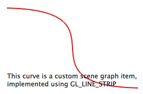

Custom Geometry Example
Shows how to implement a custom geometry in the Qt Quick Scene Graph.
The custom geometry example shows how to create a QQuickItem which uses the scene graph API to build a custom geometry for the scene graph. It does this by creating a BezierCurve item which is made part of the CustomGeometry module and makes use of this in a QML file.

BezierCurve Declaration
The item declaration subclasses the QQuickItem class and adds five properties. One for each of the four control points in the bezier curve and a parameter to control the number of segments the curve is subdivided into. For each of the properties we have corresponding getter and setter functions. Since these properties can be bound to in QML, it is also preferable to have notifier signals for each of them so changes will be picked up the QML engine and used accordingly.
The synchronization point between the QML scene and the rendering scene graph is the virtual function QQuickItem::updatePaintNode() which all items with custom scene graph logic must implement.
Note: The scene graph will on many hardware configurations be rendering on a separate thread. It is therefore crucial that interaction with the scene graph happens in a controlled manner, first and foremost through the QQuickItem::updatePaintNode() function.
BezierCurve Implementation
The BezierCurve constructor sets up default values for the control points and the number of segments. The bezier curve is specified in normalized coordinates relative to the item's bounding rectangle.
The constructor also sets the flag QQuickItem::ItemHasContents. This flags tells the canvas that this item provides visual content and will call QQuickItem::updatePaintNode() when it is time for the QML scene to be synchronized with the rendering scene graph.
The BezierCurve class has no data members that need to be cleaned up so the destructor does nothing. It is worth mentioning that the rendering scene graph is managed by the scene graph it self, potentially in a different thread, so one should never retain QSGNode references in the QQuickItem class nor try to clean them up explicitly.
The setter function for the p1 property checks if the value is unchanged and exits early if this is the case. Then it updates the internal value and emits the changed signal. It then proceeds to call the QQuickItem::update() function which will notify the rendering scene graph, that the state of this object has changed and needs to be synchronized with the rendering scene graph. A call to update() will result in a call to QQuickItem::updatePaintNode() at a later time.
The other property setters are equivalent, and are omitted from this example.
The updatePaintNode() function is the primary integration point for synchronizing the state of the QML scene with the rendering scene graph. The function gets passed a QSGNode which is the instance that was returned on the last call to the function. It will be null the first time the function gets called and we create our QSGGeometryNode which we will fill with geometry and a material.
We then create the geometry and add it to the node. The first argument to the QSGGeometry constructor is a definition of the vertex type, called an "attribute set". Since the graphics often used in QML centers around a few common standard attribute sets, these are provided by default. Here we use the Point2D attribute set which has two floats, one for x coordinates and one for y coordinates. The second argument is the vertex count.
Custom attribute sets can also created, but that is not covered in this example.
Since we do not have any special needs for memory managing the geometry, we specify that the QSGGeometryNode should own the geometry.
To minimize allocations, reduce memory fragmentation and improve performance, it would also be possible to make the geometry a member of a QSGGeometryNode subclass, in which case, we would not have set the QSGGeometryNode::OwnsGeometry flag.
The scene graph API provides a few commonly used used material implementations. In this example we use the QSGFlatColorMaterial which will fill the shape defined by the geometry with a solid color. Again we pass the ownership of the material to the node, so it can be cleaned up by the scene graph.
In the case where the QML item has changed and we only want to modify the existing node's geometry, we cast the oldNode to a QSGGeometryNode instance and extract it's geometry. In case the segment count has changed, we call QSGGeometry::allocate() to make sure it has the right number of vertices.
To fill the geometry, we first extract the vertex array from it. Since we are using one of the default attribute sets, we can use the convenience function QSGGeometry::vertexDataAsPoint2D(). Then we go through each segment and calculate its position and write that value to the vertex.
In the end of the function, we return the node so the scene graph can render it.
Application Entry-Point
The application is a straightforward QML application, with a QGuiApplication and a QQuickView that we pass a .qml file. To make use of the BezierCurve item, we need to register it in the QML engine, using the qmlRegisterType function. We give it the name BezierCurve and make it part of the CustomGeometry 1.0 module.
As the bezier curve is drawn using GL_LINE_STRIP, we specify that the view should be multisampled to get antialiasing. This is not required, but it will make the item look a bit nicer on hardware that supports it. Multisampling is not enabled by default because it often results in higher memory usage.
Using the Item
Our .qml file imports the QtQuick 2.0 module to get the standard elements and also our own CustomGeometry 1.0 module which contains our newly created BezierCurve element.
Then we create the our root item and an instance of the BezierCurve which we anchor to fill the root.
To make the example a bit more interesting we add an animation to change the two control points in the curve. The end points stay unchanged.
Finally we overlay a short text outlining what the example shows.
Files: